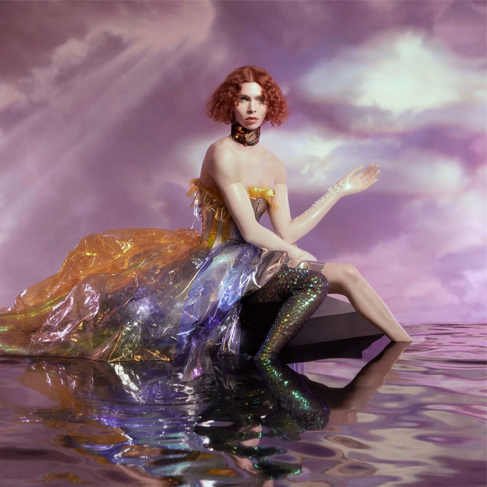
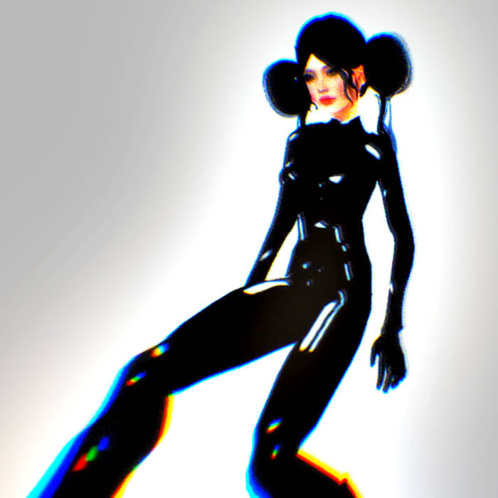
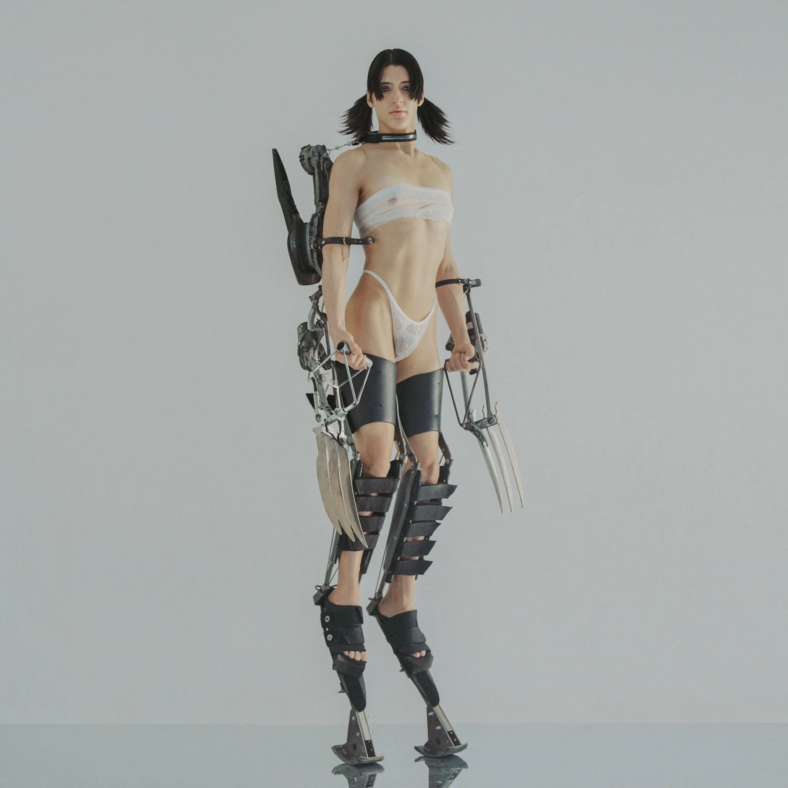

pots and pans
the most extreme version of pop
about:
origin: early 2010s
similar genres associated with: deconstructed club, xenopop, idm, trip hop, hip house, industrial, experimental pop
primary figures: SOPHIE (pioneer), arca, cobrah, shygirl, sega bodega, jackie extreme, six impala, emily montes
quintessential albums to check out

album: OIL OF EVERY PEARL'S UN-INSIDES
artist: SOPHIE
released: june 15, 2018
sub-genres: bubblegum bass, deconstructed ckub, wonky, art pop, idk bro...
descriptors: foward-thinking, timeless, futuristic, space, feminine, uplifting, surreal, transcendant
recommended if you like: being trans, liberation, loving yourself, techno-divinity, the fermi paradox, desires for a utopian society
thoughts: there's no word in the english language that can truly describe the beauty of this album. it immersive in the world it envisions, somewhere free of pain, but where you can expel all of your raw emotions and anxiety.
fav track: is it cold in the water?

album: jackie extreme
artist: jackie extreme
released: may 31, 2019
sub-genres: industrial, witch house, noise pop
descriptors: mechanical, surreal, noisy, artifical, inhuman, aggressive, hostile, scary
recommended if you like: artifical intelligence, virtual singers, aliens, siri, ai in a box theory, singularity, scp, bondage and latex
thoughts: much darker than expected, but not in the way that its disturbing or gorey, ok maybe like that, but i would think this is what a virus would sound like, very in your face but it's not like it gonna kidnap you, maybe...
fav track: harass me

album: kick i
artist: arca
released: june 26, 2020
sub-genres: deconstructed club, glitch pop, xenopop, latin electronic
descriptors: mechanical, robotic, sexual, lust, rhythmic, dense, abstract, victory
recommended if you like: mechas, monster-f*ckers, red lipstick, techgore, cursing in spanish, pleasers, cyborgs
thoughts: same wavelength as SOPHIE's debut but in the way that we are not there to that utopia, like we have to fight our way from the dystopian society that we are in right now. as prideful and very lgbt-centered it is, it's still very angry and frustrated that you want to wipe out the planet and start anew as if it's trying to prove itself to you.
fav track: la chiquí
listen here!
sources + read more